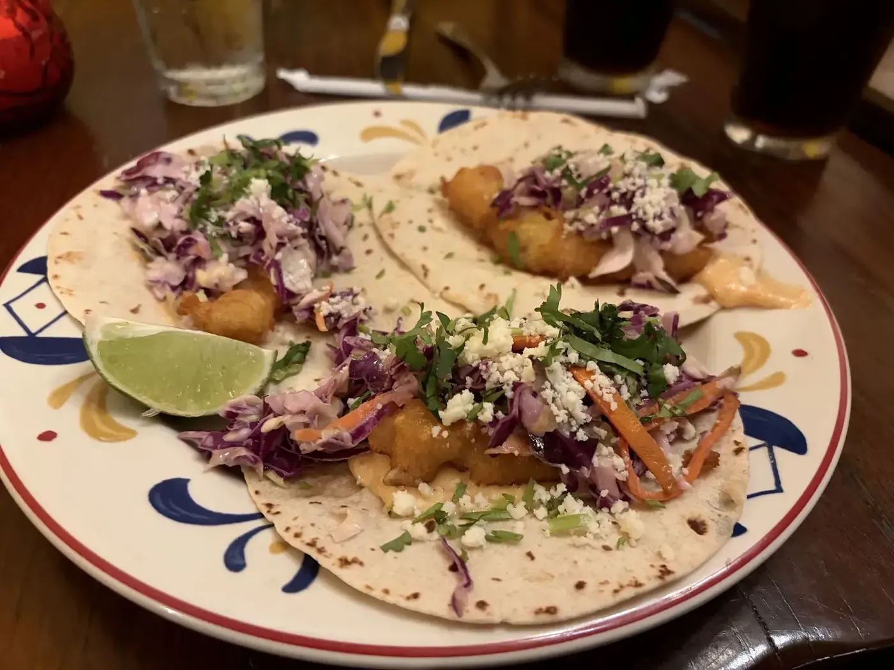
Tacos
Birria, carne asada, al pastor and street tacos.

Mexican restaurant · WestShore, Tampa
Birria tacos, street tacos, handmade margaritas and 100+ tequilas near Westshore and Kennedy.
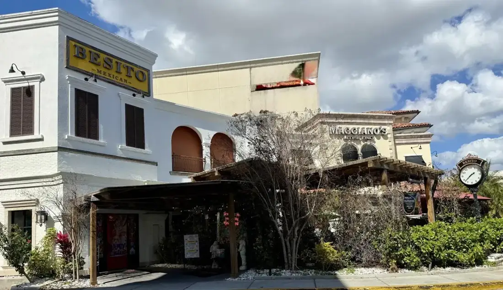
Made fresh, served warm
Order these first.

Birria, carne asada, al pastor and street tacos.
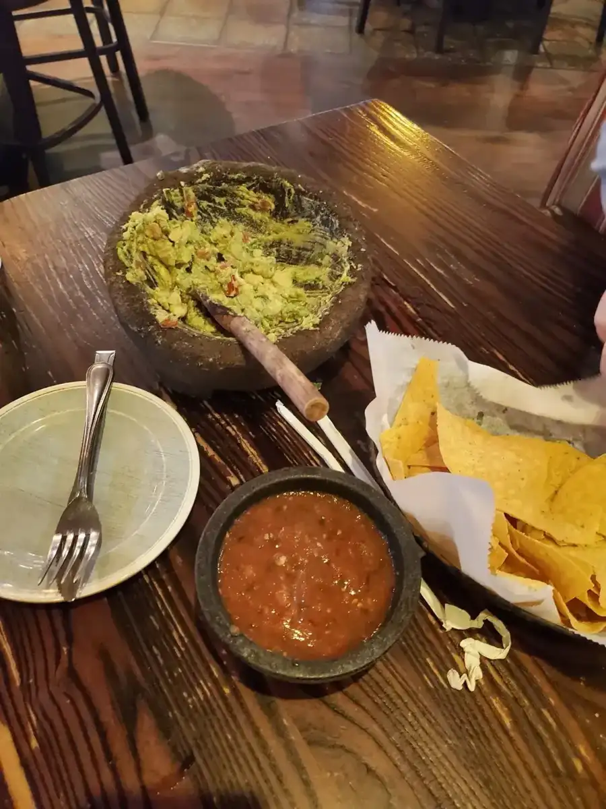
Fresh guacamole made at your table, with chips and salsa.
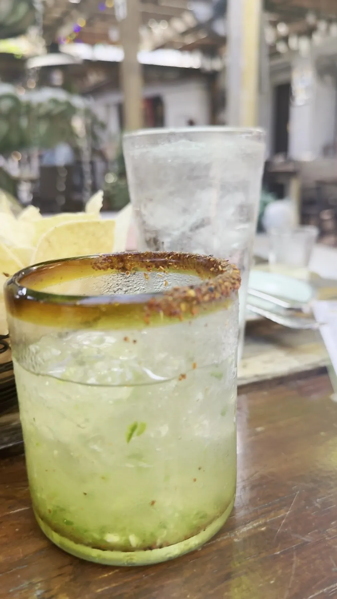
Skinny passion fruit margaritas, handmade cocktails and over 100 tequilas to choose from.
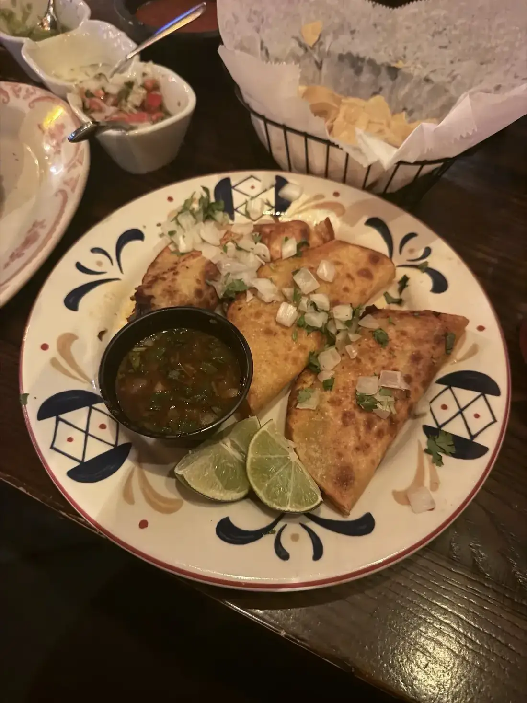
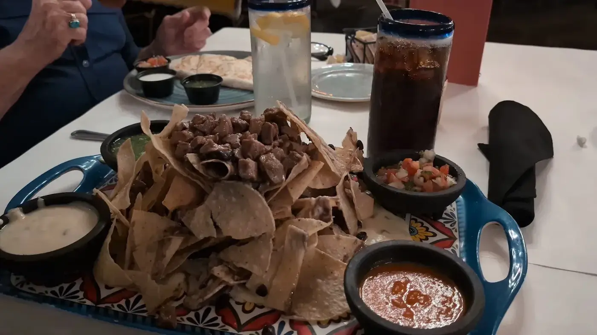
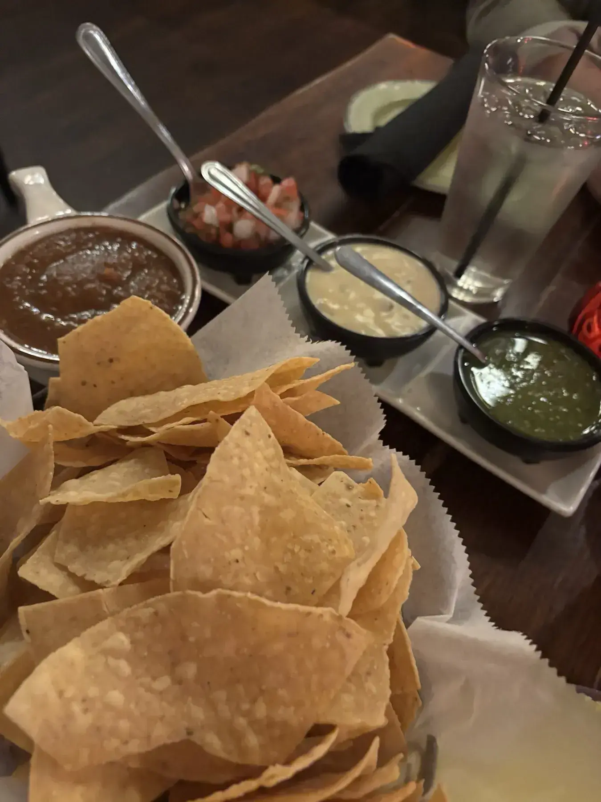
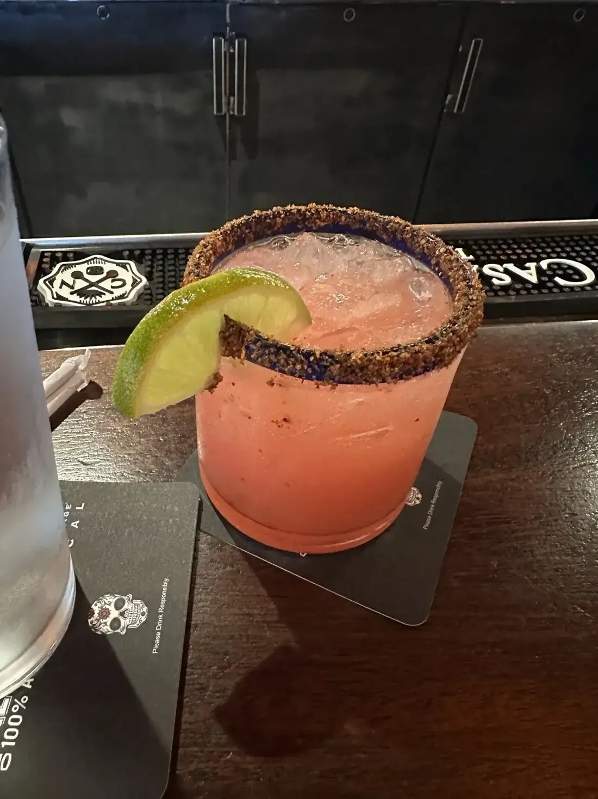
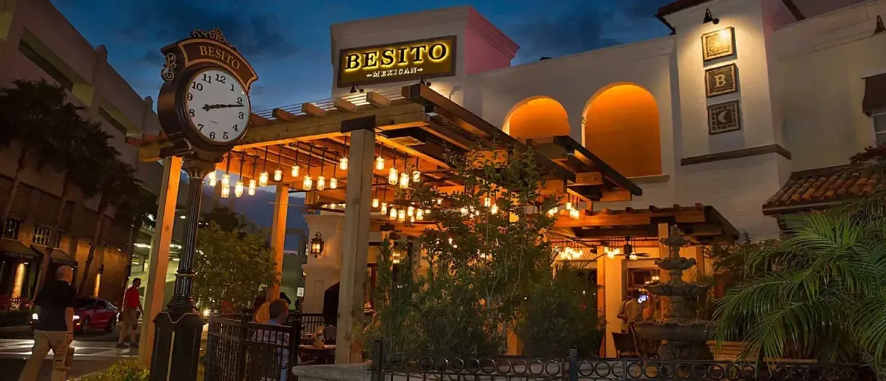
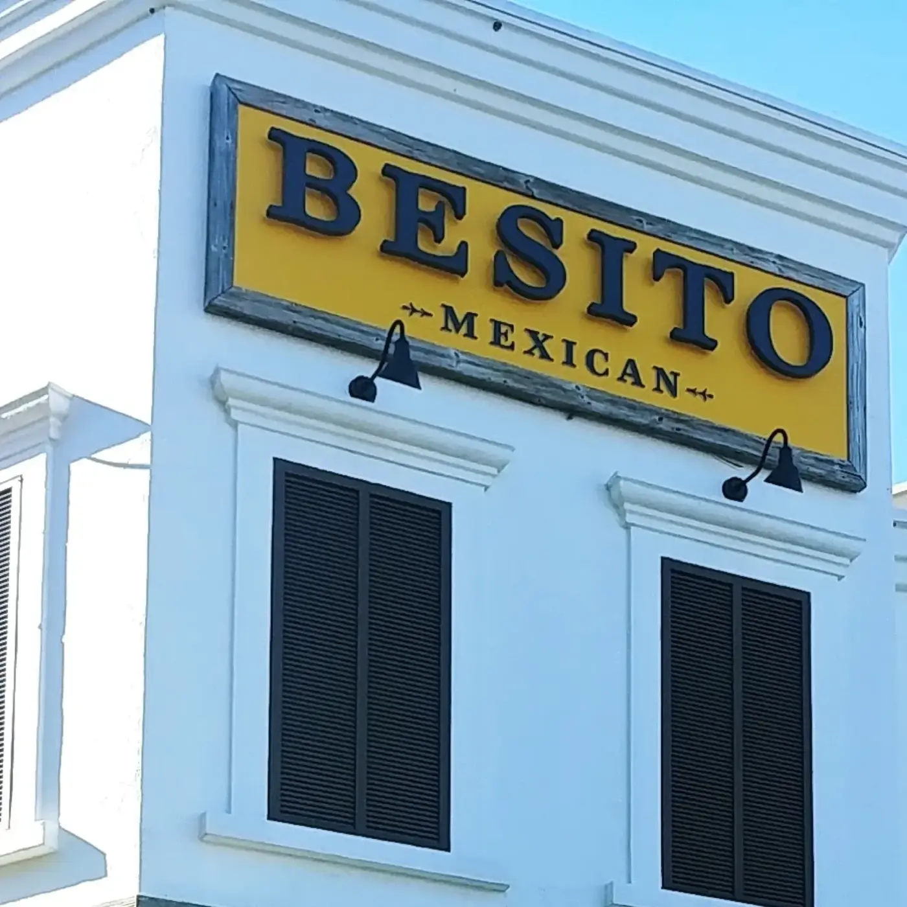
4.5 ★ · 5591 Google reviews
In town for 3 nights and staying at a hotel across the street, this restaurant caught our eye, so we decided to check it out. Loved it so much, we went back the next evening, too! Skinny margaritas, tableside guacamole, and quesadilla with steak. Selena was our server tonight, super pleasant and attentive, went above and beyond, made our guacamole exactly to our liking!
First time here and won’t be our last! It was worth the drive for us from Fishhawk! Selena was very attentive and one of the best servers we have had. The overall atmosphere was great. Decor beautiful and bathrooms super clean! Table side Guacamole is a MUST! The mini churros at the end were a delicious touch! Can’t wait to back and thank you Selena for making our experience great!
First time here and definitely coming back soon! Love the latin music, we had guacamole and chips for appetizer with skinny passion fruit margaritas for the first round, to eat we had Birria tacos, carne Asada tacos, Tijuana bowl, then we had 2 mexicolada! (Delicious) ,our sever Erika was super sweet,helpful and very patient with us.! Bathroom are clean
Nuestra historia
Besito, which means little kiss, is in WestShore Plaza near I-275, at Westshore and Kennedy, minutes from Tampa International Airport, International Plaza and Raymond James Stadium.
Table side guacamole, a long cocktail list and a deep tequila shelf. Mexican ingredients are local and fresh, and family comes first.
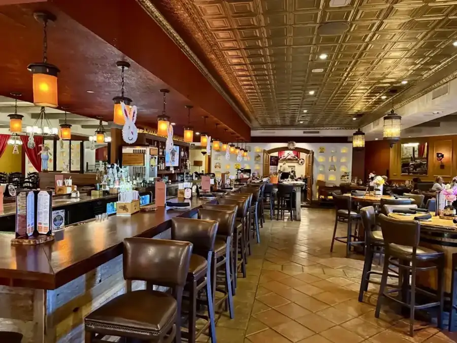
Ven a vernos
205 Westshore Plaza, Tampa, FL 33609
Happy hour Mon to Fri, 3 to 6 PM, margaritas 2x1. Brunch 11:30 AM to 3 PM.